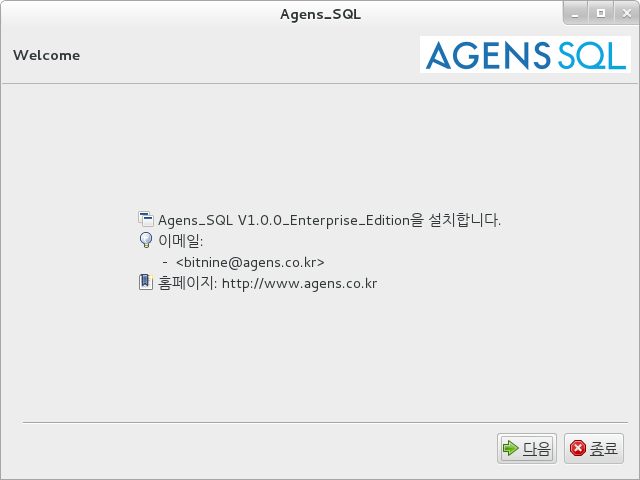
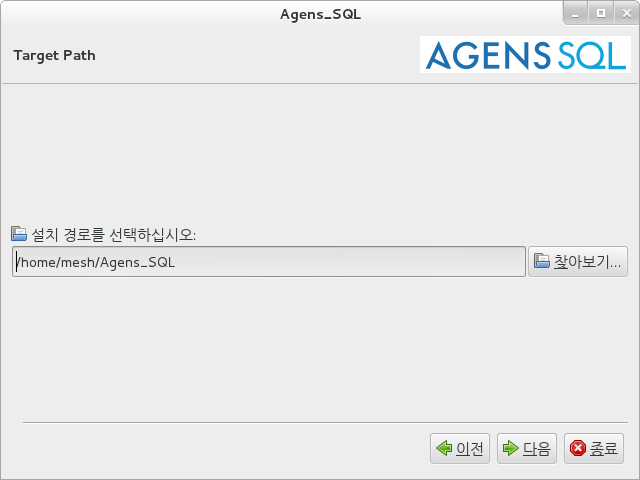
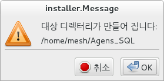
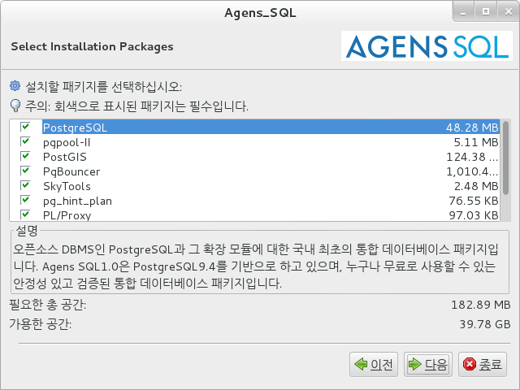
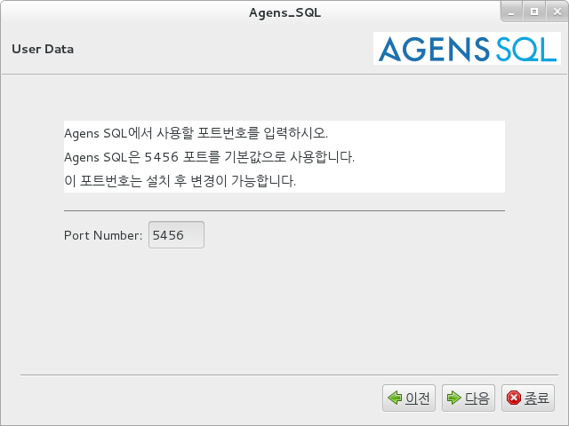
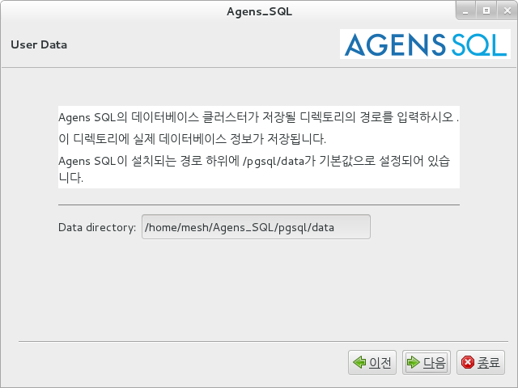
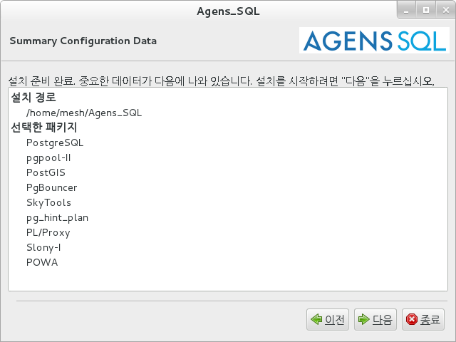
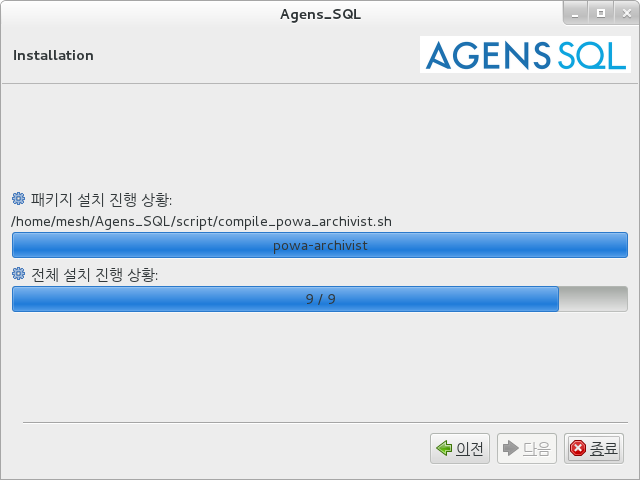
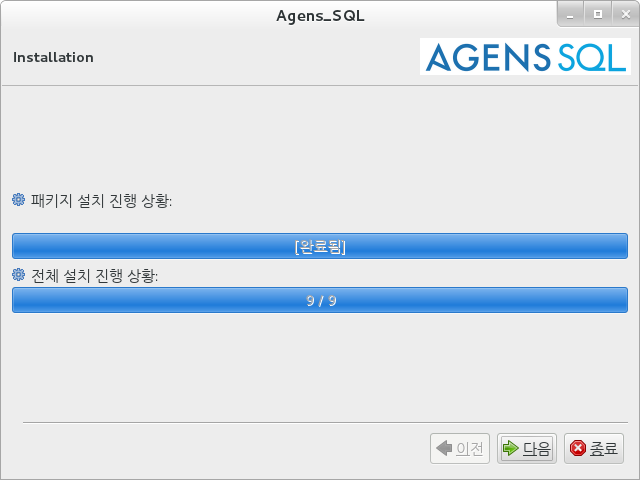
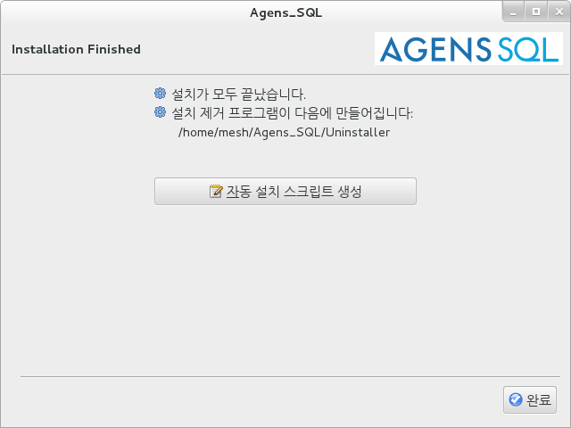

2.1. Linux
Agens SQL은 인스톨러를 이용한 제품 설치를 지원한다.
Agens SQL 인스톨러는 linux계열이라면 플랫폼의 구분 없이 동일한 방법으로 설치가 진행된다. 기본적으로는 GUI 모드로 설치가 진행되지만 콘솔 모드로 설치 할 수 있다.
Standard Edition과 Enterprise Edition은 설치할 수 있는 패키지의 수가 다르다는 것 외에는 설치 방법에 차이가 없다. 이 문서에서는 Enterprise Edition을 기준으로 설명한다.
2.1.1. 설치 전 준비사항
Agens SQL을 설치하기에 앞서 다음과 같은 사항이 준비되어 있어야 한다.
Agens SQL 인스톨러를 실행시키기 위한 Java JRE(Java Runtime Environment)가 설치되어 있어야 한다.
Agens SQL를 관리하기 위한 OS User가 생성 되어 있어야 한다. Agens SQL은 OS User의 이름을 'agens'로 사용할 것을 권장한다.
Agens SQL를 관리하기 위한 OS User로 접속한 상태에서 1장를 참고하여 Agens SQL 홈페이지에서 본인의 지원 플랫폼 및 운영체제에 맞는 인스톨러를 다운로드 받는다. (http://www.agens.co.kr/downloads/)
2.1.2. 설치 시작
2.1.2.1. GUI 모드
인스톨러를 다운로드 받은 곳으로 이동하여 다음의 명령어를 통해 인스톨러를 GUI 모드로 실행한다.
$ java -jar Agens_SQL_Version_Edition_Platform.jar
인스톨러가 정상적으로 실행되었다면 다음과 같이 초기화면이 나타난다.

제품의 버전정보와 이메일 그리고 제품 홈페이지에 대한 정보를 확인할 수 있다.
[다음] 버튼을 클릭하여 설치를 계속 진행한다.
설치하는 도중에 [종료] 버튼을 클릭하여 설치를 취소 할 수 있다.Agens SQL에 대한 소개

Agens SQL에 대한 소개가 나타난다. 확인 후 [다음] 버튼을 클릭하여 설치를 계속 진행한다.
설치하는 도중에 [이전] 버튼을 클릭하여 이전의 단계로 이동할 수 있다.Agens SQL 라이선스 동의

Agens SQL의 라이선스 정보가 나타난다. 라이선스를 확인하고 '이 라이선스 조항에 동의한다'를 선택해야 [다음] 버튼이 활성화된다.
[다음] 버튼을 클릭하여 설치를 계속 진행한다.Agens SQL 설치 경로 설정

Agens SQL의 설치 경로를 설정하는 창이 나타난다.
디폴트 디렉터리는 '$HOME/Agens_SQL'로 설정되어 있다.
설치 경로를 변경하려면 [찾아보기] 버튼을 클릭하여 Agens SQL가 설치될 디렉터리의 위치를 선택하거나 디폴트 설치 경로가 작성되어 있는 곳을 클릭하여 직접 설치 경로를 입력한다.
경로 설정을 마쳤으면 [다음] 버튼을 클릭하여 설치를 계속 진행한다.새 디렉터리 생성 팝업

입력한 설치 디렉터리가 존재하지 않을 경우 팝업 창이 나타난다.
디렉터리를 생성할 것이라면 [OK] 버튼 클릭하여 다음 단계로 진행하고 그렇지 않으면 [취소] 버튼을 클릭하여 이전 단계로 돌아간다.설치할 패키지 선택

설치할 패키지를 선택하는 창이 나타난다. 각 패키지의 이름을 클릭하면 해당 패키지에 대한 설명을 볼 수 있다.
체크박스에 체크 된 패키지들이 설치가 되며, 체크박스를 클릭하여 설치하고자 하는 패키지를 추가하거나 제거할 수 있다.
설치하고자 하는 패키지의 선택을 마치면 [다음] 버튼을 클릭하여 설치를 계속 진행한다.포트 번호 설정

Agens SQL이 사용할 포트 번호를 설정한다. 입력 가능한 포트 번호는 0부터 65535까지의 숫자이며, 디폴트는 5456으로 설정되어 있다.
설치되는 머신에서 이미 사용중이거나 0부터 65535 사이의 정수값이 아니면 다음단계로 진행되지 않는다.데이터베이스 생성 디렉토리 입력

데이터베이스가 생성될 디렉토리의 경로를 입력한다.
디폴트는 $INSTALL_PATH/pgsql/data로 설정되어 있다.설치 패키지 목록 확인

Agens SQL을 설치할 경로와 선택한 패키지의 목록이 나타난다. [다음] 버튼을 클릭하면 설치가 시작된다.
설치 시작

설치 진행 상황을 확인 할 수 있다. 현재 창에서는 실시간으로 설치되고 있는 패키지와 파일을 확인 할 수 있다.
시스템 성능에 따라 약간의 시간이 소요될 수 있다.설치 완료

진행 표시줄에 [완료됨]이 나타나면 문제 없이 정상적으로 설치가 완료된 것이다.
[다음] 버튼을 클릭하여 마지막 단계로 이동한다.Agens SQL 인스톨러 종료

설치가 모두 끝났다는 것을 알리는 창이 나타난다.
[완료]를 클릭하면 인스톨러가 정상적으로 종료된다.
2.1.2.2. 콘솔 모드
인스톨러를 다운로드 받은 곳으로 이동하여 다음의 명령어를 통해 인스톨러를 콘솔 모드로 실행한다.
$ java -jar Agens_SQL_Version_Edition_Platform.jar -console
인스톨러가 정상적으로 실행되었다면 다음과 같이 출력된다.
Agens_SQL V1.0.0_Enterprise_Edition을 설치합니다. - bitnine@agens.co.kr 홈페이지: http://www.agens.co.kr press 1 to continue, 2 to quit, 3 to redisplay
1을 입력하고 엔터를 눌러 설치를 진행한다.
2를 입력하거나 [Ctrl + c]를 입력하면 설치를 중단할 수 있다.
3읍 입력하면 콘솔에 현재 설치 단계에 대한 설명이 다시 한번 출력된다.Agens SQL 라이선스 동의
Agens SQL, Copyright (c) 2015, Bitnine Co., Ltd. Permission to use, copy, modify, and distribute this software and its documentation for any purpose, without fee, and without a written agreement is hereby granted, provided that the above copyright notice and this paragraph and the following two paragraphs appear in all copies. IN NO EVENT SHALL BITNINE BE LIABLE TO ANY PARTY FOR DIRECT, INDIRECT, SPECIAL, INCIDENTAL, OR CONSEQUENTIAL DAMAGES, INCLUDING LOST PROFITS, ARISING OUT OF THE USE OF THIS SOFTWARE AND ITS DOCUMENTATION, EVEN IF BITNINE HAS BEEN ADVISED OF THE POSSIBILITY OF SUCH DAMAGE. BITNINE SPECIFICALLY DISCLAIMS ANY WARRANTIES, INCLUDING, BUT NOT LIMITED TO, THE IMPLIED WARRANTIES OF MERCHANTABILITY AND FITNESS FOR A PARTICULAR PURPOSE. THE SOFTWARE PROVIDED HEREUNDER IS ON AN "AS IS" BASIS, AND BITNINE HAS NO OBLIGATIONS TO qPROVIDE MAINTENANCE, SUPPORT, UPDATES, ENHANCEMENTS, OR MODIFICATIONS. press 1 to accept, 2 to reject, 3 to redisplay
Agens SQL의 라이선스 정보가 나타난다. 라이선스를 확인하고 라이센스에 동의하면 1을 입력하여 설치를 계속 진행한다.
Agens SQL 설치 경로 설정
Select target path [/home/mesh/Agens_SQL]
Agens SQL의 설치 경로를 설정한다.
설치할 경로를 입력한다. 경로를 입력하지 않고 엔터를 누르면 디폴트 디렉터리로 설정된다. 디폴트 디렉터리는 '$HOME/Agens_SQL'로 설정되어 있다.press 1 to continue, 2 to quit, 3 to redisplay
경로 설정을 마쳤으면 1을 입력하여 설치를 계속 진행한다.
설치할 패키지 선택
설치할 패키지를 선택한다. 각 패키지에 대한 설명이 출력되며, 설치를 하고자 하는 패키지를 선택하려면 1을 선택하지 않으려면 0을 입력한다.
설치할 패키지를 선택하십시오: [x] PostgreSQL (PostgreSQL은 강력한 오픈 소스 객체관계형 데이터베이스 시스템입니다. 완벽한 ACID속성을 제공하고 다양한 언어로 제공되는 저장 프로시저를 비롯하여 외래키, 조인, 뷰, 트리거를 제공합니다. SQL:2008 표준을 준수합니다. Perl, Python, Ruby, Tcl, C/C++를 포함하는 다양한 언어로 작성된 저장프로시저를 실행할 수 있습니다.) input 1 to select, 0 to deselect: [x] pgpool-II (PostgreSQL 서버와 PostgreSQL DB 클라이언트 사이에 동작하는 미들웨어입니다. Connection pooling, Load Balancing 기능을 통해 시스템 전체의 처리량을 향상시키거나 Replication 기능을 통해 사용자에게 고가용성(High Availability)를 제공합니다.) input 1 to select, 0 to deselect: [x] PostGIS (PostgreSQL에 지리적 객체기능을 더하여 공간정보 처리기능을 효율적으로 수행할 수 있도록 합니다. 이를 이용하여 지리적 객체를 이용한 SQL query문을 작성할 수 있습니다.) input 1 to select, 0 to deselect: [x] PgBouncer (PostgreSQL에 connection pooling 기능을 가능케 해주는 매우 가벼운 모듈입니다. Session pooling을 이용하여 클라이언트 세션과 비연결 상태일 때 서버는 해당 세션에 대한 연결정보를 pool에 저장하여 관리를 할 수 있습니다. 이로써 세션과 서버간의 연결이 성립될 때 갖게 되는 부하를 줄일 수 있습니다.) input 1 to select, 0 to deselect: [x] SkyTools (PGQ를 포함한 다양한 기능을 제공하는 패키지 입니다. PGQ는 Queueing Solution으로써 트랜젝션에 대한 비동기 배치 작업을 손쉽게 해결하여 줍니다.) input 1 to select, 0 to deselect: [x] pg_hint_plan (사용자가 직접 query에 hint절을 추가하여 최적의 query execute plan을 세울 수 있도록 합니다.) input 1 to select, 0 to deselect: [x] PL/Proxy (proxy함수를 작성하여 호출하는 방식으로 사용하며, proxy 함수를 수행하면 원격 데이터베이스 내에 구현되어 있는 함수를 로컬의 proxy 함수 내부에 명시되어 있는 원격 주소만으로도 원격 함수와 동일한 동작을 가능케 합니다.) input 1 to select, 0 to deselect: [x] Slony-I (Slony-I은 마스터 멀티 슬레이브 기반의 replication 툴입니다. 데이타베이스 전체가 아니라 테이블 기반으로 replication을 수행합니다.) input 1 to select, 0 to deselect: [x] POWA-archivist (POWA는 PostgreSQL 서버에 대한 성능통계를 수집 및 종합하여 실시간으로 차트와 그래프 형태로 제공합니다.) input 1 to select, 0 to deselect:
...pack selection done. press 1 to continue, 2 to quit, 3 to redisplay
패키지 선택이 끝나면 한 번 더 진행할 것인지에 대해서 물어본다. 1을 입력하여 설치를 계속 진행한다.
포트 번호 설정
Agens SQL에서 사용할 포트번호를 입력하시오. Agens SQL은 5456 포트를 기본값으로 사용합니다. 이 포트번호는 설치 후 변경이 가능합니다. ------------------------------------------ Port Number: [5456] press 1 to continue, 2 to quit, 3 to redisplay
Agens SQL이 사용할 포트 번호를 설정한다. 입력 가능한 포트 번호는 0부터 65535까지의 숫자이며, 디폴트는 5456으로 설정되어 있다. 설치되는 머신에서 이미 사용중이거나 0부터 65535 사이의 정수값이 아니면 다음단계로 진행되지 않는다. 아무것도 입력하지 않고 엔터를 누르면 디폴트 값으로 설정된다.
데이터베이스 생성 디렉토리 입력
Agens SQL의 데이터베이스 클러스터가 저장될 디렉토리의 경로를 입력하시오 . 이 디렉토리에 실제 데이터베이스 정보가 저장됩니다. Agens SQL이 설치되는 경로 하위에 /pgsql/data가 기본값으로 설정되어 있습니다. ------------------------------------------ Data directory: [/home/mesh/Agens_SQL/pgsql/data] press 1 to continue, 2 to quit, 3 to redisplay
데이터베이스가 생성될 디렉토리의 경로를 입력한다.
디폴트는 $INSTALL_PATH/pgsql/data로 설정되어 있다.
아무것도 입력하지 않고 엔터를 누르면 디폴트 값으로 설정된다.
설치 시작
[ Starting to unpack ] [ Processing package: pgsql (1/9) ] [ Processing package: pgpool (2/9) ] [ Processing package: postgis (3/9) ] [ Processing package: pgbouncer (4/9) ] [ Processing package: skytools (5/9) ] [ Processing package: pg_hint_plan (6/9) ] [ Processing package: plproxy (7/9) ] [ Processing package: slony (8/9) ] [ Processing package: powa-archivist (9/9) ] [ Unpacking finished ] Install was successful application installed on /home/mesh/Agens_SQL [ Console installation done ]
설치 진행 상황을 확인 할 수 있다. 현재 창에서는 실시간으로 설치되고 있는 패키지와 파일을 확인 할 수 있다.
시스템 성능에 따라 약간의 시간이 소요될 수 있다.
설치가 정상적으로 완료되었다는 [ Console installation done ] 메세지가 나타나고 설치가 종료된다.
2.1.3. 설치 후 작업
환경변수를 등록하지 않으면 설치된 라이브러리를 제대로 읽어들이지 않아 올바르게 작동하지 않고, 명령어를 호출할 때 psql과 같이 단순한 명령어가 아닌 /path/to/Agens_SQL/pgsql/bin/psql과 같이 절대경로를 입력해야 한다.
Agens SQL이 설치된 OS User의 bash_profile에 환경변수를 추가한다.
$ vi ~/.bash_profile
다음의 내용을 입력한다.
export AGENS_HOME=/path/to/Agens_SQL export PATH=$AGENS_HOME/pgsql/bin:$PATH export LD_LIBRARY_PATH=$AGENS_HOME/pgsql/lib:$LD_LIBRARY_PATH
다음과 같은 방법을 하나를 선택하여 환경변수가 적용되도록 한다.
로그아웃 후 다시 로그인
source의 명령을 호출
$ source ~/.bash_profile